Discovery of Spatial Ecotypes from a Single Sample
Source:vignettes/SingleSample.Rmd
SingleSample.RmdOverview
In this tutorial, we will illustrate how to perform de novo discovery
of spatially distinct cellular ecosystems (SEs) from single-cell spatial
transcriptomics dataset using the SpatialEcoTyper
function.
First load required packages for this vignette
suppressPackageStartupMessages(library(dplyr))
suppressPackageStartupMessages(library(ggplot2))
suppressPackageStartupMessages(library(parallel))
suppressPackageStartupMessages(library(Seurat))
suppressPackageStartupMessages(library(data.table))
suppressPackageStartupMessages(library(googledrive))
suppressPackageStartupMessages(library(R.utils))
library(SpatialEcoTyper)Loading data
We will be analyzing single-cell spatial transcriptomics data from a
melanoma sample (raw data available in Vizgen’s MERSCOPE FFPE
Human Immuno-oncology). To quickly demonstrate how SpatialEcoTyper
works, we’ve selected a subset of the sample, which can be downloaded
from here.
Text files as input
Download the data from Google Drive
drive_deauth() # Disable Google sign-in requirement
drive_download(as_id("13Rc5Rsu8jbnEYYfUse-xQ7ges51LcI7n"), "HumanMelanomaPatient1_subset_counts.tsv.gz")
drive_download(as_id("12xcZNhpT-xbhcG8kX1QAdTeM9TKeFAUW"), "HumanMelanomaPatient1_subset_scmeta.tsv")Large text files can be loaded into R using the fread
function from the data.table package.
# Load single-cell gene expression matrix. Rows are genes, columns are cells.
scdata <- fread("HumanMelanomaPatient1_subset_counts.tsv.gz",
sep = "\t",header = TRUE, data.table = FALSE)
rownames(scdata) <- scdata[, 1] # set genes as row names
scdata <- as.matrix(scdata[, -1])
head(scdata[, 1:5])## HumanMelanomaPatient1__cell_3655 HumanMelanomaPatient1__cell_3657
## PDK4 0 1
## TNFRSF17 0 0
## ICAM3 0 0
## FAP 1 0
## GZMB 0 0
## TSC2 0 0
## HumanMelanomaPatient1__cell_3658 HumanMelanomaPatient1__cell_3660
## PDK4 1 0
## TNFRSF17 0 0
## ICAM3 0 0
## FAP 0 0
## GZMB 0 0
## TSC2 0 0
## HumanMelanomaPatient1__cell_3661
## PDK4 0
## TNFRSF17 0
## ICAM3 0
## FAP 0
## GZMB 0
## TSC2 0
# Load single-cell metadata. Three columns are required, including X, Y, and CellType. Others are optional.
scmeta <- read.table("HumanMelanomaPatient1_subset_scmeta.tsv",
sep = "\t",header = TRUE, row.names = 1)
scmeta <- scmeta[colnames(scdata), ] # match the cell ids in scdata and scmeta
head(scmeta)## X Y CellType CellTypeName
## HumanMelanomaPatient1__cell_3655 1894.706 -6367.766 Fibroblast Fibroblasts
## HumanMelanomaPatient1__cell_3657 1942.480 -6369.602 Fibroblast Fibroblasts
## HumanMelanomaPatient1__cell_3658 1963.007 -6374.026 Fibroblast Fibroblasts
## HumanMelanomaPatient1__cell_3660 1981.600 -6372.266 Fibroblast Fibroblasts
## HumanMelanomaPatient1__cell_3661 1742.939 -6374.851 Fibroblast Fibroblasts
## HumanMelanomaPatient1__cell_3663 1921.683 -6383.309 Fibroblast Fibroblasts
## Region Dist2Interface
## HumanMelanomaPatient1__cell_3655 Stroma -883.1752
## HumanMelanomaPatient1__cell_3657 Stroma -894.8463
## HumanMelanomaPatient1__cell_3658 Stroma -904.1115
## HumanMelanomaPatient1__cell_3660 Stroma -907.8909
## HumanMelanomaPatient1__cell_3661 Stroma -874.2712
## HumanMelanomaPatient1__cell_3663 Stroma -903.6559Sparse matrix as input
SpatialEcoTyper supports sparse matrix as input. Mtx files can be
loaded into R using the ReadMtx
function from the Seurat package.
drive_download(as_id("13M3xhRxp0xK9gf5F4DE9idSBFqVQIXDT"), "HumanMelanomaPatient1_subset_counts.mtx.gz")
drive_download(as_id("136feRaFjMtNvduLTm5xqa3WhyyoG4Xzo"), "HumanMelanomaPatient1_subset_cells.tsv.gz")
drive_download(as_id("13QprWzJhzzUy_w3XSrjlt9pjf2n-G7HV"), "HumanMelanomaPatient1_subset_genes.tsv.gz")
scdata <- ReadMtx(mtx = "HumanMelanomaPatient1_subset_counts.mtx.gz", cells = "HumanMelanomaPatient1_subset_cells.tsv.gz", features = "HumanMelanomaPatient1_subset_genes.tsv.gz", feature.column = 1, cell.column = 1)Data normalization
The gene expression data should be normalized before SpatialEcoTyper analysis. The data can be normalized using NormalizeData or SCTransform.
Here, we are normalizing using SCTransform normalization. We recommend to install the glmGamPoi package for faster computation.
if(!"glmGamPoi" %in% installed.packages()){
BiocManager::install("glmGamPoi")
}
tmpobj <- CreateSeuratObject(scdata) %>%
SCTransform(clip.range = c(-10, 10), verbose = FALSE)
seurat_version = as.integer(gsub("\\..*", "", as.character(packageVersion("SeuratObject"))))
if(seurat_version<5){
normdata <- GetAssayData(tmpobj, "data")
}else{
normdata <- tmpobj[["SCT"]]$data
}NormalizeData for the normalization:
normdata <- NormalizeData(scdata)Preview of the sample
The demo sample includes spatial expression of 500 genes across 27,907 cells, categorized into ten cell types, namely B cells, CD4+ T cells, CD8+ T cells, NK cells, plasma cells, macrophages, dendritic cells (DC), fibroblasts, endothelial cells, as well as cancer cell of origin that are eliminated for the analysis.
Besides, all cells were grouped into four regions, including tumor, inner margin, outer margin, and stroma. The tumor and stroma regions were defined based on the density of cancer cells. For detailed information about the tumor and stroma annotations, please refer to the CytoSPACE paper. The inner and outer margins were delineated as regions extending 250 μm inside and outside the tumor boundaries, respectively.
The SpatialView function can be used to visualize single
cells in spatial space, by cell type or by region.
# Visualize the cell type annotations in the tissue
SpatialView(scmeta, by = "CellType") + scale_color_manual(values = pals::kelly()[-1])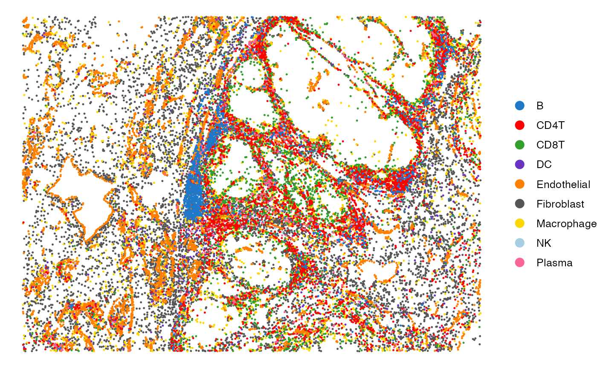
# Visualize the regions in the tissue
SpatialView(scmeta, by = "Region") + scale_color_brewer(type = "qual", palette = "Set1")The SpatialView function can also be used to visualize
continuous characteristics, such as the minimum distance of each single
cell to tumor/stroma margin and gene expression levels.
# Visualize the distance to tumor margin
SpatialView(scmeta, by = "Dist2Interface") +
scale_colour_gradient2(low = "#5e3c99", high = "#e66101",
mid = "#d9d9d9", midpoint = 0)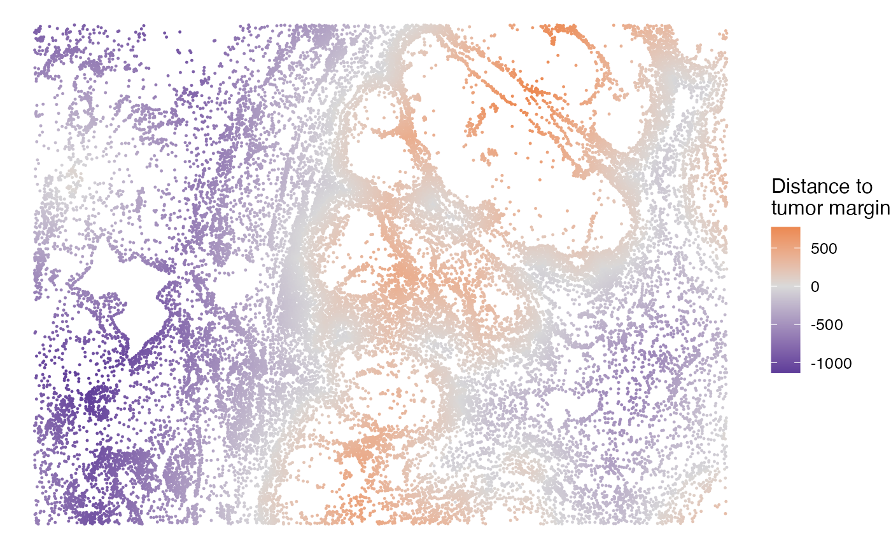
## Visualize gene expression in spatial
gg <- scmeta
gg$Expression <- normdata["STAT1", ]
SpatialView(gg, by = "Expression") + scale_color_viridis_c()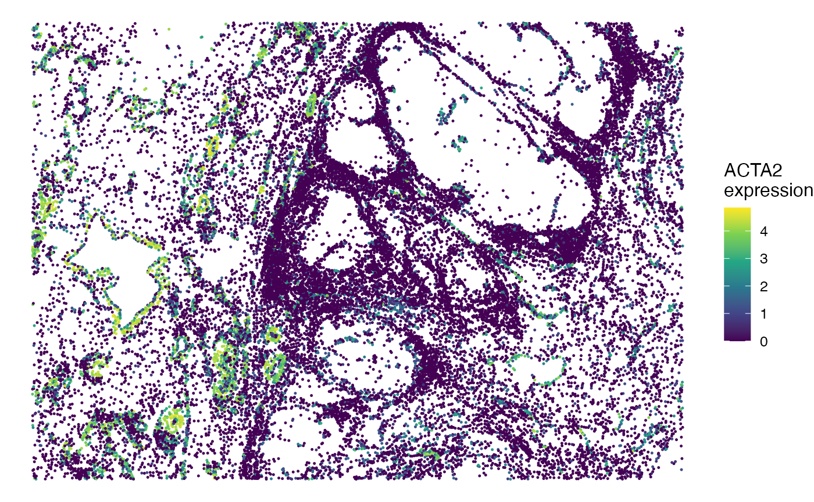
SE discovery using SpatialEcoTyper
SpatialEcoTyper is designed to identify spatial ecotypes from single-cell spatial transcriptomics data. The workflow begins by grouping spatially co-localized single cells into microregions, where cell-type-specific gene expression profiles (GEPs) are constructed for each microregion. Following this, similarity networks of these microregions are constructed based on their cell type-specific GEPs. To integrate these networks, SpatialEcoTyper utilizes the Similarity Network Fusion (SNF) method, originally developed for multi-omics data integration (Wang et al., 2014). The fused similarity network represents the spatial architecture of the tissue, enabling the identification of spatial ecotypes (SEs). Finally, SEs are detected by grouping similar spatial microregions using the Louvain algorithm.
Key arguments for SpatialEcoTyper
-
normdataA matrix representing normalized gene expression data, where rows correspond to genes and columns correspond to cells. -
metadataA data frame containing metadata associated with each cell. Must include spatial coordinates (e.g., X and Y) as well as cell type annotations. The row names must match the column names of the . -
outprefixCharacter string specifying the prefix for output file names. -
radiusNumeric specifying the radius (default: 50 µm) for defining spatial microregion. -
resolutionNumeric specifying the resolution for Louvain clustering (default: 0.8). -
nfeaturesInteger specifying the number of top variable features (default: 3000) for PCA. -
min.cts.per.regionInteger specifying the minimum number of cell types (default: 2) required for a microregion. -
ncoresInteger specifying the number of CPU cores to use for parallel processing.
You can type ?SpatialEcoTyper to visualize the full
manual. Here, we only show a list of important parameters including:
## This step takes ~2 minutes to complete on macOS with an Apple M1 Pro chip and 16 GB memory.
se_results <- SpatialEcoTyper(normdata, scmeta,
outprefix = "Melanoma1_subset",
radius = 50, ncores = 2)When the outprefix is specified, the SpatialEcoTyper
result will be saved as a RDS file named
outprefix_SpatialEcoTyper_results.rds
(Melanoma1_subset_SpatialEcoTyper_results.rds here).
The results can be loaded into R via:
se_results <- readRDS("Melanoma1_subset_SpatialEcoTyper_results.rds")The SpatialEcoTyper result is a list that includes two key components: (1) a Seurat object constructed from the integrated embedding of spatial microregions, allowing for detailed analysis and visualization of spatial architecture; (2) A data frame of the single-cell metadata, which now includes annotations for discovered spatial ecotypes. These annotations can be used to explore the spatial distribution and characteristics of SEs within the tissue.
# Extract the Seurat object and updated single-cell metadata
obj <- se_results$obj # A Seurat object
scmeta <- se_results$metadata %>% arrange(SE) # Updated single-cell meta data, with SE annotation added
head(scmeta)## X Y CellType CellTypeName
## HumanMelanomaPatient1__cell_4675 4578.019 -6445.993 Fibroblast Fibroblasts
## HumanMelanomaPatient1__cell_4738 4529.162 -6504.117 Fibroblast Fibroblasts
## HumanMelanomaPatient1__cell_4774 4533.228 -6529.591 Fibroblast Fibroblasts
## HumanMelanomaPatient1__cell_4803 4340.813 -6562.381 Fibroblast Fibroblasts
## HumanMelanomaPatient1__cell_4806 4401.938 -6567.152 Fibroblast Fibroblasts
## HumanMelanomaPatient1__cell_4808 4388.422 -6570.215 Fibroblast Fibroblasts
## Region Dist2Interface SE
## HumanMelanomaPatient1__cell_4675 Outer margin -197.09807 SE0
## HumanMelanomaPatient1__cell_4738 Outer margin -186.13295 SE0
## HumanMelanomaPatient1__cell_4774 Outer margin -199.69317 SE0
## HumanMelanomaPatient1__cell_4803 Outer margin -95.54956 SE0
## HumanMelanomaPatient1__cell_4806 Outer margin -124.01602 SE0
## HumanMelanomaPatient1__cell_4808 Outer margin -119.07031 SE0Embedding of spatial architecture
The spatial microregions’ embedding can be visualized using standard
Seurat
functions such as DimPlot and FeaturePlot.
These visualizations help to explore the spatial organization and
heterogeneity within the tissue.
Visualizing tumor/stroma regions in the embedding
DimPlot(obj, group.by = "Region") + scale_color_brewer(type = "qual", palette = "Set1")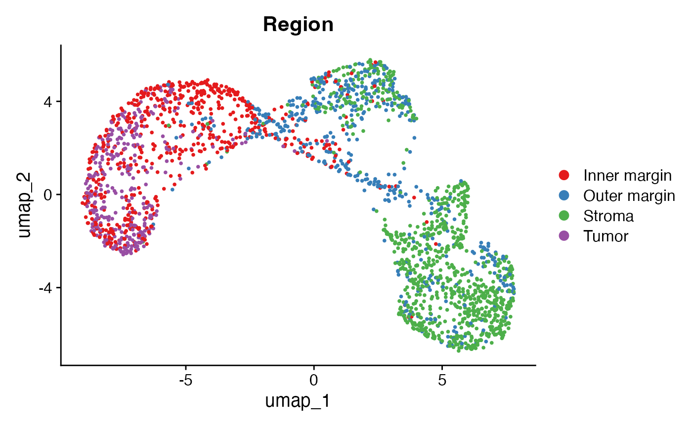
Visualizing the distance of microregions to tumor/stroma interface
This plot highlights the distance of each spatial microregion to the tumor/stroma interface, revealing the spatial continuum learnt by SpatialEcoTyper.
FeaturePlot(obj, "Dist2Interface", min.cutoff = -600, max.cutoff = 600) +
scale_colour_gradient2(low = "#5e3c99", high = "#e66101", mid = "#d9d9d9", midpoint = 0)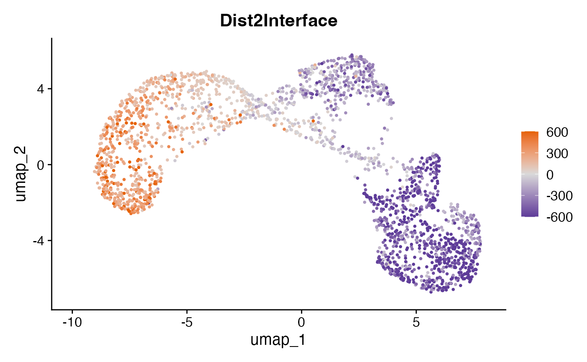
Visualizing spatial ecotypes in the embedding
This plot visualizes the SEs within the spatial embedding. The SEs represent distinct spatial microenvironments, each with unique cellular compositions and spatial characteristics.
DimPlot(obj, group.by = "SE") + scale_color_manual(values = pals::kelly()[-1])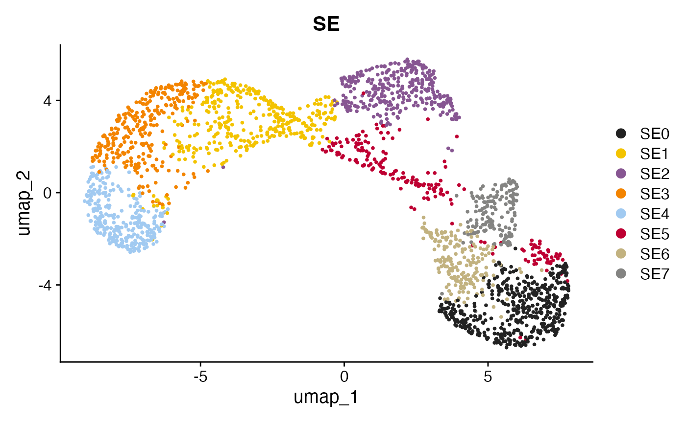
Visualizing the most abundant cell types in each spatial microregion
DimPlot(obj, group.by = "CellType") +
scale_color_manual(values = pals::kelly()[-1])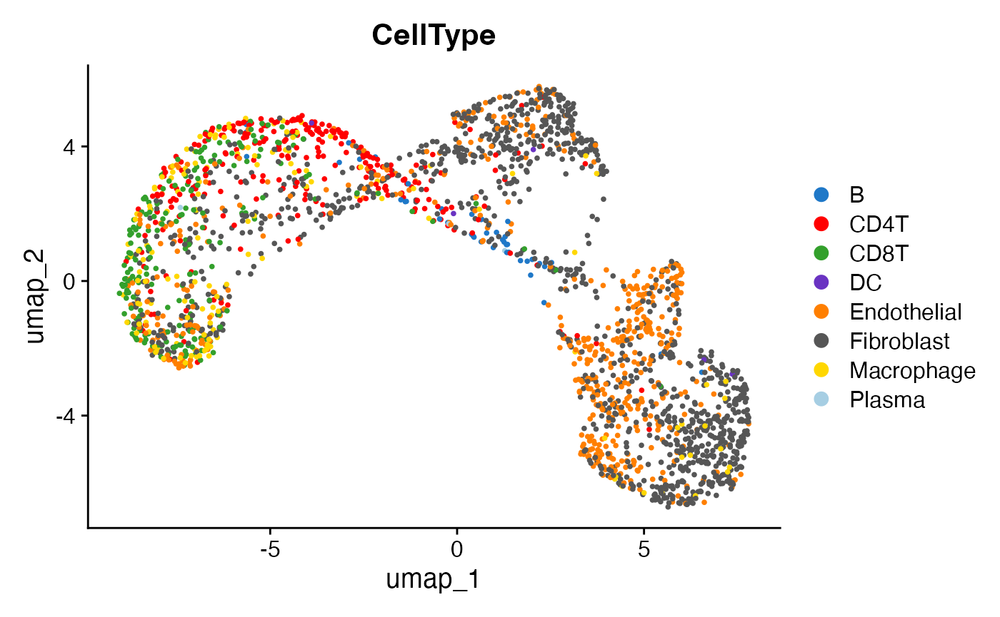
SE characteristics
Visualizing SEs in the tissue
The spatial distribution of SEs within the tissue can be visualized
using the SpatialView function. This visualization provides
insights into the localization and spatial organization of different SEs
across the tissue section.
SpatialView(scmeta, by = "SE") 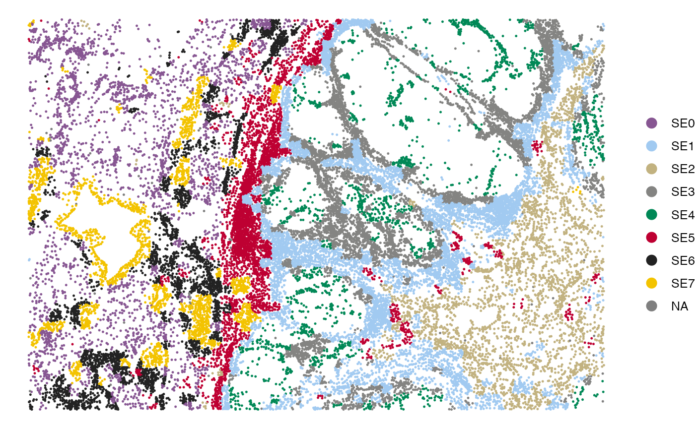
Note: Cells with NA values in the SE annotations were excluded from this analysis. The exclusions occur due to the absence of neighboring cells or an insufficient number of detected genes.
Visualizing the cell type composition of SEs
The bar plot below illustrates the cell type composition within each SE. This visualization helps to identify the dominant cell types in each SE and compare the cellular makeup across different SEs.
gg <- scmeta %>% filter(!is.na(SE)) %>% count(SE, CellType)
ggplot(gg, aes(SE, n, fill = CellType)) +
geom_bar(stat = "identity", position = "fill") +
scale_fill_manual(values = pals::kelly()[-1]) +
theme_bw(base_size = 14) + coord_flip() +
labs(y = "Cell type abundance")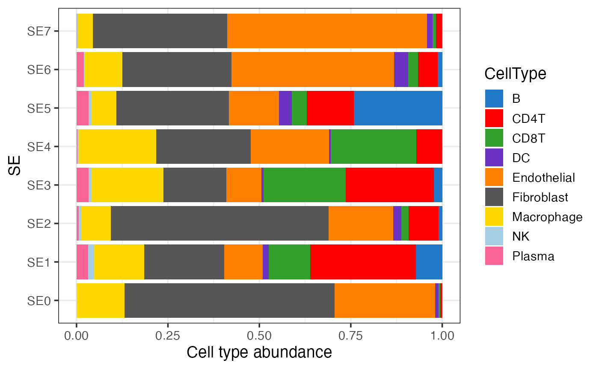
Visualizing the association between SEs and pre-annotated regions
This bar plot shows the relationship between SEs and pre-annotated regions, such as tumor and stroma. The proportion of each SE associated with these regions is displayed, providing insights into how SEs correspond to different tissue regions.
gg <- scmeta %>% filter(!is.na(SE)) %>% count(SE, Region)
ggplot(gg, aes(SE, n, fill = Region)) +
geom_bar(stat = "identity", position = "fill") +
scale_fill_brewer(type = "qual", palette = "Set1") +
theme_bw(base_size = 14) + coord_flip() +
labs(y = "Fraction")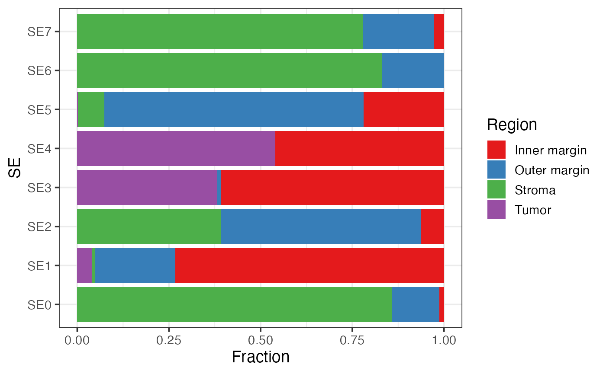
Visualizing the distance of SEs to tumor/stroma interface
This box plot visualizes the distribution of distances of SEs to the tumor/stroma interface. SEs are ordered by their median distance, highlighting spatial localization of SEs.
gg <- scmeta %>% filter(!is.na(SE))
## Order SEs by their distance to tumor/stroma interface
tmp <- gg %>% group_by(SE) %>% summarise(Mid = median(Dist2Interface)) %>% arrange(Mid) %>% pull(SE)
gg$SE = factor(gg$SE, levels = tmp)
ggplot(gg, aes(SE, Dist2Interface)) +
geom_boxplot() + theme_bw() + labs(y = "Distance to tumor/stroma interface (μm)")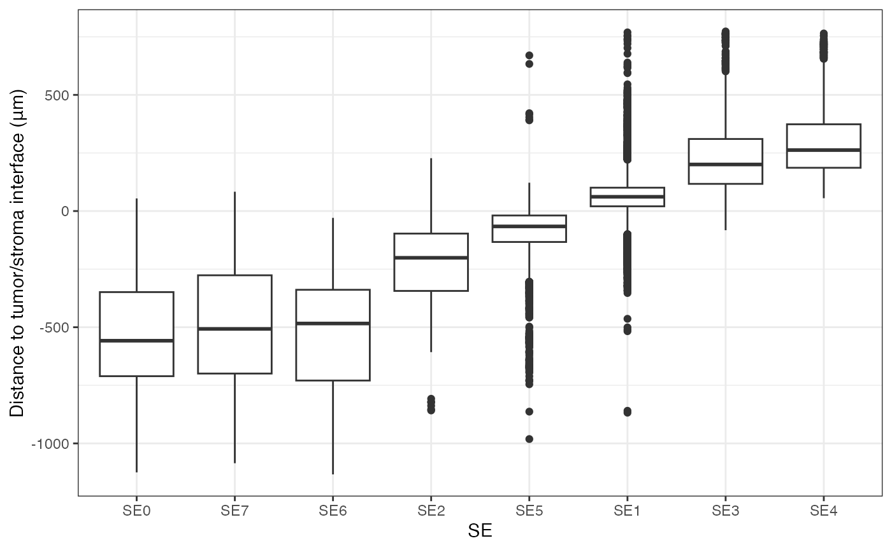
Identification of cell-type-specific SE markers
Differential expression analysis
To identify cell-type-specific SE markers, we can perform
differential expression analysis using the presto
package. Below is an example of how to identify fibroblast-specific
markers for each SE.
if(!"presto" %in% installed.packages()){
BiocManager::install(c("remotes", "immunogenomics/presto"))
}
require("presto")
# Ensure the normalized data is aligned with the single-cell metadata
normdata = normdata[, rownames(scmeta)]
# Perform differential expression analysis for fibroblasts across SEs
idx = which(scmeta$CellType=="Fibroblast" & !is.na(scmeta$SE))
degs = wilcoxauc(normdata[, idx], scmeta$SE[idx])
# Filter for significant markers with positive log-fold change
degs = degs %>% filter(logFC>0 & pval<0.05) %>% arrange(desc(logFC))
head(degs)## feature group avgExpr logFC statistic auc pval
## 1 ACTA2 SE7 2.163320 1.8197807 3798740 0.7728462 3.967332e-181
## 2 PLA2G2A SE2 2.026133 1.4387873 5126624 0.8350462 7.288467e-307
## 3 PKM SE8 2.323114 1.3090753 1893378 0.8785406 2.013579e-115
## 4 PLA2G2A SE4 1.881473 1.2685947 4812222 0.7964803 5.779646e-237
## 5 FN1 SE3 2.736915 1.0057420 4577625 0.7694509 1.404543e-156
## 6 COL1A1 SE0 4.357378 0.9544396 8092777 0.8819916 0.000000e+00
## padj pct_in pct_out
## 1 5.448469e-179 70.41499 31.61094
## 2 3.002848e-304 91.39896 34.67463
## 3 4.147972e-113 99.02280 76.12536
## 4 2.381214e-234 86.27244 35.59561
## 5 5.786716e-154 98.38710 84.30514
## 6 0.000000e+00 100.00000 99.35360Note: The MERSCOPE data used for SE discovery includes a limited number of genes. To enhance the analysis, you can extend the differential expression analysis to the whole transcriptome by aligning scRNA-seq data to the spatial transcriptomics data via CytoSPACE.
Visualizing the expression of cell state markers
Once you’ve identified potential markers, you can visualize their expression across SEs. Below is an example using the STAT1 gene.
## Gene expression across all SEs
gg <- scmeta[idx, ]
gg$Expression <- normdata["STAT1", idx]
ggplot(gg, aes(SE, Expression)) + geom_boxplot() +
theme_classic(base_size = 14) + ylab("STAT1 expression")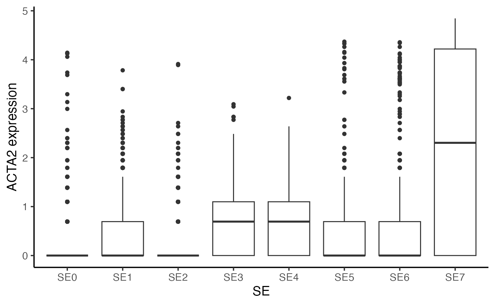
Session info
The session info can be invaluable for users who encounter issues, as it allows them to replicate the exact environment and identify potential discrepancies in package versions or configurations that might be causing problems.
## R version 4.2.0 (2022-04-22)
## Platform: x86_64-apple-darwin17.0 (64-bit)
## Running under: macOS Big Sur/Monterey 10.16
##
## Matrix products: default
## BLAS: /Library/Frameworks/R.framework/Versions/4.2/Resources/lib/libRblas.0.dylib
## LAPACK: /Library/Frameworks/R.framework/Versions/4.2/Resources/lib/libRlapack.dylib
##
## locale:
## [1] en_US.UTF-8/en_US.UTF-8/en_US.UTF-8/C/en_US.UTF-8/en_US.UTF-8
##
## attached base packages:
## [1] parallel stats graphics grDevices utils datasets methods
## [8] base
##
## other attached packages:
## [1] presto_1.0.0 Rcpp_1.0.10 SpatialEcoTyper_0.0.4
## [4] NMF_0.27 Biobase_2.56.0 BiocGenerics_0.42.0
## [7] cluster_2.1.4 rngtools_1.5.2 registry_0.5-1
## [10] RANN_2.6.1 Matrix_1.5-3 R.utils_2.12.2
## [13] R.oo_1.25.0 R.methodsS3_1.8.2 googledrive_2.1.1
## [16] data.table_1.14.6 SeuratObject_4.1.3 Seurat_4.3.0
## [19] ggplot2_3.4.0 dplyr_1.1.0
##
## loaded via a namespace (and not attached):
## [1] circlize_0.4.15 systemfonts_1.0.4 plyr_1.8.8
## [4] igraph_1.3.5 lazyeval_0.2.2 sp_1.6-0
## [7] splines_4.2.0 listenv_0.9.0 scattermore_0.8
## [10] gridBase_0.4-7 digest_0.6.31 foreach_1.5.2
## [13] htmltools_0.5.8.1 fansi_1.0.4 magrittr_2.0.3
## [16] memoise_2.0.1 tensor_1.5 doParallel_1.0.17
## [19] ROCR_1.0-11 ComplexHeatmap_2.12.1 globals_0.16.2
## [22] matrixStats_0.63.0 pkgdown_2.0.9 spatstat.sparse_3.0-0
## [25] colorspace_2.1-0 ggrepel_0.9.2 textshaping_0.3.7
## [28] xfun_0.37 crayon_1.5.2 jsonlite_1.8.4
## [31] progressr_0.13.0 spatstat.data_3.0-0 survival_3.5-0
## [34] zoo_1.8-11 iterators_1.0.14 glue_1.6.2
## [37] polyclip_1.10-4 pals_1.7 gtable_0.3.1
## [40] gargle_1.5.1 leiden_0.4.3 GetoptLong_1.0.5
## [43] shape_1.4.6 future.apply_1.10.0 maps_3.4.1
## [46] abind_1.4-5 scales_1.2.1 DBI_1.1.3
## [49] spatstat.random_3.1-3 miniUI_0.1.1.1 viridisLite_0.4.1
## [52] xtable_1.8-4 clue_0.3-64 reticulate_1.28
## [55] mapproj_1.2.11 stats4_4.2.0 htmlwidgets_1.6.1
## [58] httr_1.4.7 RColorBrewer_1.1-3 ellipsis_0.3.2
## [61] ica_1.0-3 farver_2.1.1 pkgconfig_2.0.3
## [64] sass_0.4.9 uwot_0.1.14 deldir_1.0-6
## [67] utf8_1.2.3 labeling_0.4.2 tidyselect_1.2.0
## [70] rlang_1.1.1 reshape2_1.4.4 later_1.3.0
## [73] munsell_0.5.0 tools_4.2.0 cachem_1.0.6
## [76] cli_3.6.2 generics_0.1.3 ggridges_0.5.4
## [79] evaluate_0.20 stringr_1.5.0 fastmap_1.1.1
## [82] yaml_2.3.7 ragg_1.3.0 goftest_1.2-3
## [85] knitr_1.42 fs_1.6.0 fitdistrplus_1.1-8
## [88] purrr_1.0.1 pbapply_1.7-0 future_1.30.0
## [91] nlme_3.1-157 mime_0.12 compiler_4.2.0
## [94] rstudioapi_0.14 plotly_4.10.1 curl_5.2.1
## [97] png_0.1-8 spatstat.utils_3.0-1 tibble_3.1.8
## [100] bslib_0.7.0 stringi_1.7.12 highr_0.10
## [103] desc_1.4.2 lattice_0.20-45 vctrs_0.6.5
## [106] pillar_1.9.0 lifecycle_1.0.3 GlobalOptions_0.1.2
## [109] spatstat.geom_3.0-6 lmtest_0.9-40 jquerylib_0.1.4
## [112] RcppAnnoy_0.0.20 cowplot_1.1.1 irlba_2.3.5.1
## [115] httpuv_1.6.8 patchwork_1.1.2 R6_2.5.1
## [118] promises_1.2.0.1 KernSmooth_2.23-20 gridExtra_2.3
## [121] IRanges_2.30.1 parallelly_1.34.0 codetools_0.2-18
## [124] dichromat_2.0-0.1 MASS_7.3-58.2 rjson_0.2.21
## [127] rprojroot_2.0.3 withr_2.5.0 sctransform_0.3.5
## [130] S4Vectors_0.34.0 grid_4.2.0 tidyr_1.3.0
## [133] rmarkdown_2.20 Rtsne_0.16 spatstat.explore_3.0-6
## [136] shiny_1.7.4